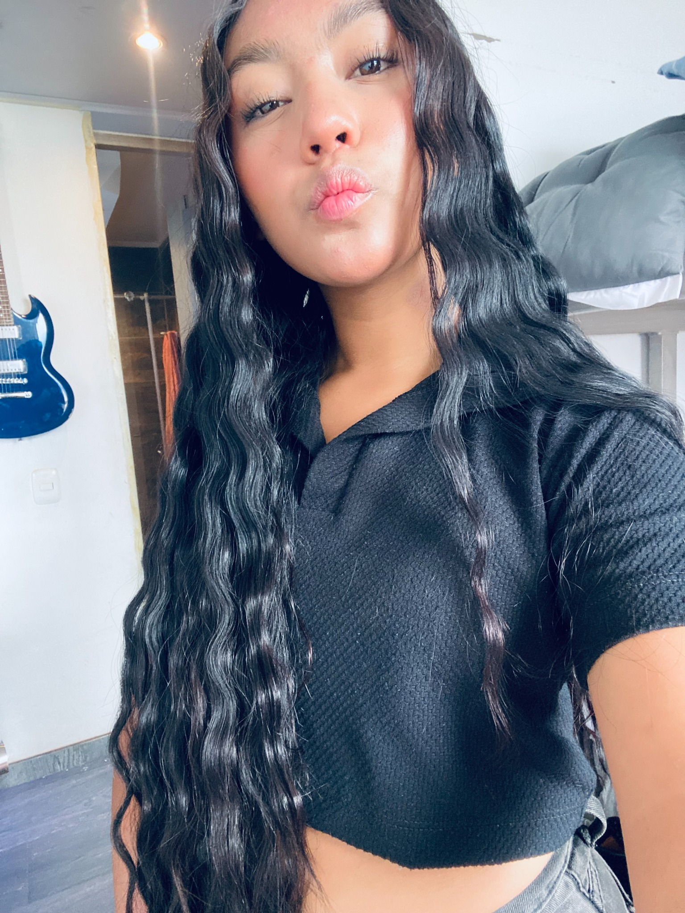

Mi propósito
Aprender sobre belleza y cuidado de la piel para ayudar a otras personas a sentirse bien y expresar su estilo.
BELLEZA · CREATIVIDAD · SUEÑOS
Me gustan el maquillaje, el cuidado personal y todo lo relacionado con la belleza. Mi meta es estudiar cosmetología y cosmiatría, aprender cada día y construir mi propio proyecto.
Con esfuerzo y creatividad.
Construyendo poco a poco mi futuro.

Mi camino, mis sueños.
✳ Creatividad y estilo
✳ Aprendizaje constante
✳ Metas para el futuro
01 / NOSOTROS
Soy Luna Sofia Tique, estudiante de grado 11. Me considero una persona con sueños, gustos e ideas que quiero convertir en mi futuro. Me interesa el maquillaje, la belleza y el cuidado de la piel.
Mi principal meta es estudiar cosmetología y cosmiatría, prepararme profesionalmente y algún día tener un proyecto propio relacionado con el mundo de la belleza.
Estoy construyendo mi camino con ilusión, creatividad y ganas de aprender. Quiero que mis gustos se conviertan en una profesión que me haga sentir orgullosa.
Aprender sobre belleza y cuidado de la piel para ayudar a otras personas a sentirse bien y expresar su estilo.
Convertirme en una profesional de la cosmetología y construir mi propio emprendimiento con dedicación.
Creatividad, responsabilidad, constancia, respeto, amor propio y aprendizaje continuo.
02 / MIS INTERESES
Estos son algunos de los temas que me gustaría aprender y explorar mientras avanzo hacia mi meta profesional.
Me interesa conocer técnicas, colores y estilos para crear diferentes looks.
Conocer más ↗Quiero aprender rutinas y cuidados adecuados para cada tipo de piel.
Conocer más ↗Mi sueño es estudiar esta carrera y desarrollar habilidades profesionales.
Conocer más ↗Me interesa aprender sobre tratamientos estéticos y el cuidado especializado de la piel.
Conocer más ↗Me gustaría crear una marca que refleje mi estilo, creatividad y esfuerzo.
Conocer más ↗En el futuro quiero convertir lo aprendido en un proyecto propio.
Conocer más ↗03 / LO QUE QUIERO APRENDER
Quiero seguir aprendiendo sobre técnicas de maquillaje, cuidado facial, higiene, atención al cliente, emprendimiento y herramientas digitales para dar a conocer mi trabajo.
04 / MIS METAS
Mis metas personales y profesionales que quiero alcanzar con esfuerzo y dedicación.
Prepararme, aprender técnicas profesionales y adquirir experiencia en el mundo de la belleza.
Prototipo móvil para registrar productos y recordar fechas importantes.
Propuesta de respaldo digital y organización segura de documentos.
Nota: Estudiar cosmetología, Crear mi marca y SafeCloud son conceptos ilustrativos creados para esta demostración académica; no representan contratos ni productos comerciales desplegados.
05 / MI MOTIVACIÓN
Quiero prepararme, aprender de mis errores y trabajar con constancia para convertir mi interés por la belleza en una profesión.
Mis metas ↗Buscar mi propio estilo y nuevas formas de aprender.
Tomarme en serio mi formación y el cuidado de las personas.
Seguir mejorando mis conocimientos y habilidades.
Avanzar paso a paso sin rendirme ante los retos.
Soñar con crear algo propio en el futuro.
06 / LO QUE ME INSPIRA
Mis valores serán parte importante de mi camino profesional.
“La propuesta nos ayudó a visualizar cómo organizar las tareas de una manera más clara y sencilla.”
“Me gustó que la plataforma se entiende fácilmente y que la información está organizada.”
“El diseño permite encontrar rápidamente los servicios y la forma de solicitar información.”
Este portafolio es una presentación personal de mis intereses y aspiraciones.
07 / PREGUNTAS SOBRE MIS METAS
Algunas respuestas sobre mis intereses y lo que quiero lograr.
Primero se identifican las necesidades, los usuarios y las funciones. Después se define el diseño, se programa, se prueba y se planifica su publicación.
Significa alojar la aplicación y, cuando corresponde, sus datos en infraestructura accesible por Internet. La configuración depende de cada proyecto.
La propuesta de servicio contempla soporte y mantenimiento según el alcance y las condiciones acordadas con cada cliente.
El valor depende de las funciones, el diseño, la complejidad, el alojamiento y el mantenimiento. Se debe realizar una evaluación antes de presentar una cotización.
Sí. Una solución puede evolucionar con nuevas funciones, mejoras de seguridad y cambios en las necesidades del negocio.
08 / CONTACTO
Esta página presenta quién soy, qué me gusta y la meta que quiero alcanzar estudiando cosmetología y cosmiatría.